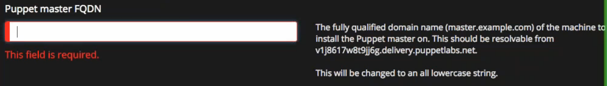

Over the summer I worked as a UX intern at Puppet. Puppet is a company makes IT automation software for managing and securing your infrastructure.
My main intern project was to develop and conduct a usability benchmarking study for measuring the ease of use of Puppet products.
Metrics: I used common usability metrics such as completion rates, task times, errors and satisfaction to measure the overall ease of use of Puppet Enterprise. Error scores were calculated by defining the number of error opportunities before each task and then comparing that value with the number of errors that occurred during testing. Satisfaction was measured using the Single Ease Question (SEQ) which is 7-point rating scale to assess how difficult users find a task. All of this metrics were combined into a single usability metric (SUM) score which was used to communicate overall performance.
Tasks: To effectively benchmarking an entire product, users should perform tasks that are high level and accommodate UI changes so you can continuing tracking the usability of core features with each release. Myself and two other UX team members designed three core tasks which provided a framework for testing usability benchmarking with the SUM. We created job stories that describe functionality most important to our users and then designed tasks that accomplished those user goals.
Users: I facilitated 5 moderated usability benchmarking sessions with highly technical users that were using Puppet to manage their infrastructure at their organization. Users were selected based on their self-reported expertise with the product and the version they were running. The goal was to select users that were familiar with newer versions of Puppet, but also represented the average consumer.
Hurdles: One issue we found during testing is that error scores did not accurately represent the usability of a task due to the complexity of Puppet Enterprise and number of potential paths.
If a participant chooses the wrong path, then every subsequent action creates a new error opportunity. Since the number of error opportunities directly influences SUM, scores may be inflated because we happened to record a large number of error opportunities for a certain task. Due to this problem, I made the decision to remove errors from the SUM calculation because it didn’t make sense for such a complex product. That being said, it is still very beneficial to record errors that participants encounter because it targets specific usability issues.
Specific Usability Issues: Due to my non-disclosure agreement, I cannot share the specific scores that were obtained during the usability benchmarking sessions. However, since the version of Puppet that was used for testing is now live I can share some of the usability issues encountered that led to tickets being filed:
When installing, nearly all users thought that the Puppet master hostname would used automatically if the textbox was left blank. As a result, users attempted to continue installation and were shown the notification below.
